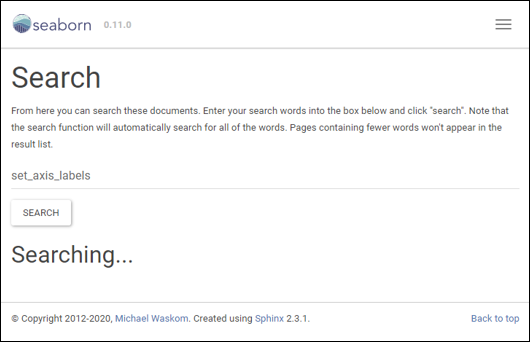

3. seaborn figure-level function
- seaborn의 핵심기능, 강력한 명령입니다.
- 4부 중 세 번째 시간입니다.
- matplotlib으로는 매우 수고스러울 일을 줄여줍니다.
- 그러나 손대기 어렵기도 합니다. 이유와 해결방법을 알아봅시다.
- 지난 글에서 matplotlib과 친한 함수를 알아봤습니다.
- 이런 axex 반환 함수를
axes-level함수, - 반대로 그림 전체를 반환하는 함수를
figure-level함수라고 합니다.
- 이런 axex 반환 함수를
- 아래 노란 부분이
figure-level함수입니다.
- 반환 형식
return type이 왜 이렇게 깔끔하지 않은지는 뒤에 보겠습니다. figure-level함수는 복잡한 그림을 한 번에 편하게 그려줍니다.
3.1. figure-level 편리함 맛보기: FacetGrid()
seaborn에 내장된 penguins dataset에는 이런 데이터가 있습니다.
- bill_length_mm : 부리 길이
- bill_depth_mm : 부리 위아래 두께
- species : 펭귄 종
- sex : 성별
- island : 서식지
이 데이터를 산점도로 한번에 나타내고자 합니다.
- X축 : bill_length_mm
- Y축 : bill_depth_mm
- 색상 : species
- X방향 axes : island
- Y방향 axes : sex
- matplotlib 코드는 이렇습니다.
1
2
3
4
5
6
7
8
9
10
11
12
13
14
15
16
17
18
19
20
21
22
23
24
25
26
27
28
29
30
31fig, axes = plt.subplots(nrows=2, ncols=3, figsize=(12, 8), sharex=True, sharey=True)
# 인자별 데이터 종 수 세기
sex = penguins["sex"].dropna().unique()
island = penguins["island"].dropna().unique()
species = penguins["species"].dropna().unique()
# X방향 axes: sex
for i in range(len(sex)):
# Y방향 axes: island
for j in range(len(island)):
# 색상 : species
for k in range(len(species)):
try:
axes[i][j].scatter(penguins.loc[penguins["sex"] == sex[i]].loc[penguins["island"] == island[j]].loc[penguins["species"] == species[k]]["bill_length_mm"],
penguins.loc[penguins["sex"] == sex[i]].loc[penguins["island"] == island[j]].loc[penguins["species"] == species[k]]["bill_depth_mm"])
axes[i][j].set_title(f"sex = {sex[i]} | island = {island[j]}")
except: # 결측치 예외처리
pass
# 맨 아래줄에만 xlabel 추가
axes[len(sex)-1, j].set_xlabel("bill_length_mm")
# 맨 왼쪽에만 ylabel 추가
axes[i, 0].set_ylabel("bill_depth_mm")
# 그래프 우측에 범례 표시
fig.legend(species, title="species", bbox_to_anchor=(0.95, 0.5))
# 그래프 간격 조정
fig.tight_layout(rect=[0,0,0.85,1])
- 따로 꾸민 것도 없는데 매우 번잡합니다.
- 인자별로 몇가지인지를 알아내야 합니다.
- 결측치 처리가 필요합니다. 안하면 에러납니다.
- 색상별로 따로 그려야 합니다.
- 그런데 seaborn을 사용하면 세 줄 만에 끝납니다.
1
2
3g = sns.FacetGrid(penguins, row="sex", col="island", hue="species")
g.map(sns.scatterplot, "bill_length_mm", "bill_depth_mm")
g.add_legend()
FacetGrid()로 만든 공간을.map()으로 채웁니다.- 데이터셋 이름, 변수 이름, 그리는 방식 외에 다른 내용이 없습니다.
- 인자가 여럿인 관계를 보기에 아주 좋습니다.
밀도 함수
density plot로 바꾸는 것도 간단합니다.위 코드에서
sns.scatterplot만sns.kdeplot으로 넣으면 됩니다.1
2
3g = sns.FacetGrid(penguins, row="sex", col="island", hue="species")
g.map(sns.kdeplot, "bill_length_mm", "bill_depth_mm")
g.add_legend()
figure-level함수는 복잡한 그림을 간단히 그릴 때 매우 강력합니다.- 이 그림들을 matplotlib으로 그리려면 얼마나 막막할까요.
3.2. figure-level 꾸미기: FacetGrid()
- 이번엔
figure-level그림을 꾸며 보겠습니다.kdeplot위에 추세선을 겹쳐 그립니다.
- 추세선이 중간에 안끊기면 좋겠습니다.
- 신뢰구간은 80% 수준으로 그리고 싶습니다.
- xlabel을 “Bill Length (mm)”로 바꾸고
- ylabel을 “Bill Depth (mm)”로 바꿉니다.
- 공식 홈페이지의 설명에 힘입어 해냈습니다.
1
2
3
4
5
6g = sns.FacetGrid(penguins, row="sex", col="island", hue="species")
g.map(sns.kdeplot, "bill_length_mm", "bill_depth_mm", alpha=0.3)
g.map(sns.regplot, "bill_length_mm", "bill_depth_mm", truncate=False, ci=80, scatter=False)
g.set_axis_labels("Bill Length (mm)", "Bill Depth (mm)")
g.add_legend()
- 한 단계 더 꾸며보도록 합시다.
- xlabel, ylabel 글자를 키우고 싶습니다.
- 추세선의 신뢰구간 80%를 적어두고 싶습니다.
- axes마다 붙어 있는 title을 정리하고 싶습니다.
- 첫 단계에서 막혔습니다.

- xlabel, ylabel을 수정할 때
set_axis_labels()를 사용했습니다.- 공식 홈페이지의
FacetGrid()부분 가이드를 따른 것입니다. - 그런데
set_axis_labels()에 대한 설명이 더 이상 없습니다.
- 공식 홈페이지의
- 혹시나, matplotlib 명령어를 넣어봅니다.
fontdict=를 적용합니다.1
2
3
4
5
6
7g = sns.FacetGrid(penguins, row="sex", col="island", hue="species")
g.map(sns.kdeplot, "bill_length_mm", "bill_depth_mm", alpha=0.3)
g.map(sns.regplot, "bill_length_mm", "bill_depth_mm", truncate=False, ci=80, scatter=False)
g.set_axis_labels("Bill Length (mm)", "Bill Depth (mm)",
fontdict={"fontsize":"large", "color":"gray", "fontweight":"bold"})
g.add_legend()
figure-level그림의 세부 설정은 도움말 찾기도 어렵습니다.- 매뉴얼에 없는 내용을 상상해서 넣어야 합니다.
- 아직은 공식 홈페이지가 충만하지 않습니다.
- 소스코드를 뜯어봐서 기능을 확인하거나
- matplotlib 명령어를 숙지하고 대응시켜 시도해야 합니다.
3.3. figure-level의 장단점
- 공식 튜토리얼에 정리된 장단점은 이렇습니다.
- 하나씩 짚어보겠습니다.
- (1) 데이터 변수에 따른 축공간 생성
- matplotlib에서 변수 갯수를 세어야 했던 것에 비해서 편리합니다.
- seaborn에 구현된 그림을 제어하는 인자 수가 확실히 적습니다.
- 번거롭더라도 axes에 직접 접근해서 matplotlib 명령을 쓰는 게 낫습니다.
- (2) 그림 밖 범례 생성
- 그림 밖에 붙는 것은 다행입니다.
- 그러나 통제가 안되어 심각한 갈증을 유발합니다.
(3) figure-level 수정 & (4) figure size를 조정하는 인자가 다름
- 장점보다 단점이 크다고 생각됩니다.
- 더 쉬운 명령어를 제공한다고 해도 결국은 또 다른 문법입니다.
- matplotlib 명령어만 해도 정신이 없는데 말이죠.
지금까지의 경험으로 이런 결론이 나옵니다.
- “figure-level의 가성비는 그리자마자, 손을 더 대기 전이 가장 높다.”
- 새로운 명령어는 새로운 혼돈입니다.
- 시각화만 붙잡고 있을 게 아니라 통계분석, 머신러닝도 해야 하거든요.
3.4. figure-level그림이 손대기 어려운 이유
- seaborn 코드를 뜯어보면 클래스 구조는 이렇습니다.
- multi-plot grids는 Grid 클래스를 상속받는 가족입니다.
FacetGrid(),PairGrid(),ClusterGrid입니다.JointGrid()는 Grid를 상속받지 않습니다.- Grid로 만든 공간에 목적에 맞는 그림을 채웁니다.
relplot(),displot(),catplot(),lmplot()은 1x1FacetGrid()로 출력됩니다.
- 그리고 Grid 클래스는
figure의 wrapper입니다.- 정확히는
matplotlib.pyplot.subplots()의 wrapper입니다. - 따라서
figure,axes에 적용되는 matplotlib 명령이 안통합니다. - 그래서
set_axis_labels같은 자체 명령어를 탑재하고 있습니다. - 하지만 보셨다시피 도움말이 충분치 않습니다.
- 정확히는
3.5. figure-level 그림을 꾸미는 방법
한마디로, seaborn 제공 함수는 한계가 큽니다.
- 기능 자체도 많이 빠져있고
- 있는 기능도 문서화가 덜 됐습니다.
- 이걸 믿고 쓰긴 어렵습니다.
하지만 대안이 있습니다.
- seaborn 그림을 matplotlib 그림으로 간주합니다.
figure-level객체 안으로 한 걸음 들어갑니다.- 그리고
figure와axes를 직접 건드립니다.
개흉 심장마사지를 상상하시면 됩니다.
가슴을 열고 직접 심장을 마사지하는 겁니다.
- 그러면, 풀지 못했던 난제도 이렇게 풀립니다.
1
2
3
4
5
6
7
8
9
10
11
12
13
14
15
16
17
18
19
20
21
22
23
24
25
26
27
28
29g = sns.FacetGrid(penguins, row="sex", col="island", hue="species", margin_titles=True, despine=False)
g.map(sns.kdeplot, "bill_length_mm", "bill_depth_mm", alpha=0.3)
g.map(sns.regplot, "bill_length_mm", "bill_depth_mm", truncate=False, ci=80, scatter=False)
g.add_legend()
# xlabel, ylabel 수정
g.set_axis_labels("Bill Length (mm)", "Bill Depth (mm)",
fontdict={"fontsize":"large", "color":"gray", "fontweight":"bold"})
# axes 직접 접근, 1차원 행렬로 표현
axs = g.axes.ravel()
for i, ax in enumerate(axs):
# 열 title 수정
if i < 3:
ax.set_title(ax.get_title(), fontdict={"fontsize":"x-large", "color":"k"}, pad=12)
# 행 title 수정
if i%3 == 2:
sex = "Male" if i == 2 else "Female"
ax.texts.clear()
text = ax.annotate(f"sex = {sex}", xy=(1.02, .5), xycoords="axes fraction", rotation=270,
ha="left", va="center", fontsize="x-large", color="k")
# suptitle 추가
g.fig.suptitle("Penguins dataset summary (ci = 80%) ",
fontsize="xx-large", fontweight="bold", color="indigo")
# 전반적 크기 조정
g.fig.tight_layout(rect=[0,0,0.88,0.97]) - 외웁시다.
figure-level함수는 matplotlib과 못 섞는다.figure-level함수는figure와axes를 한번 더 감싸고 있다.figure-level함수를 수정하려면 후벼 파는 과정이 필요하다.